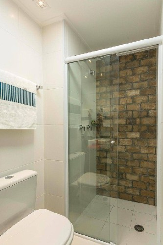
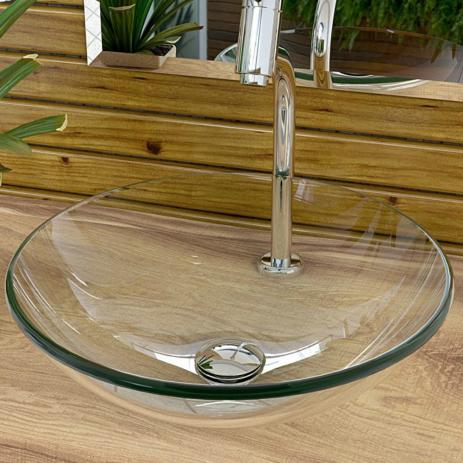
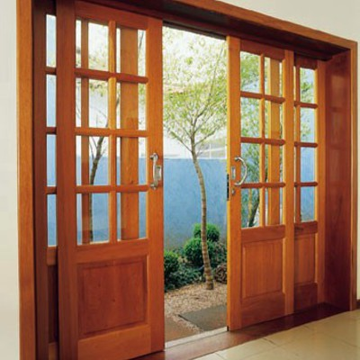
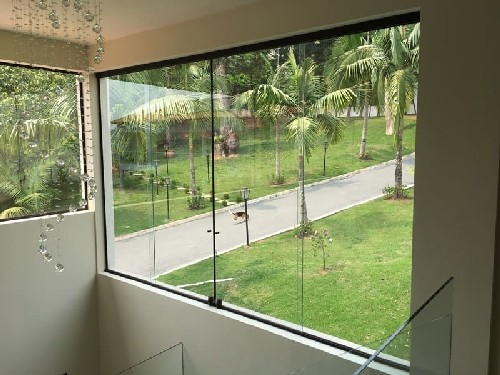
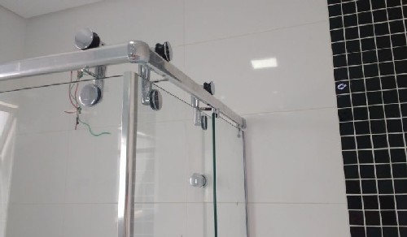
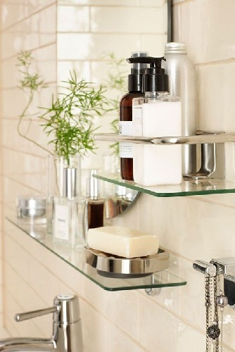

Rocha Representações — Catálogo de Vidros
Voltar aos serviços
Materiais de vidro
Fotografias incluídas no catálogo. Use Imprimir / Salvar em PDF para gerar sua cópia.
Imprimir / Salvar em PDF
Portfólio de Produtos
Catálogo de Vidros
01 / 03

Box para banheiro

Cuba de vidro
Portfólio de Produtos
Catálogo de Vidros
02 / 03

Janela de madeira com vidro

Janela de vidro temperado
Portfólio de Produtos
Catálogo de Vidros
03 / 03

Porta de vidro para banheiro

Prateleira de vidro para banheiro